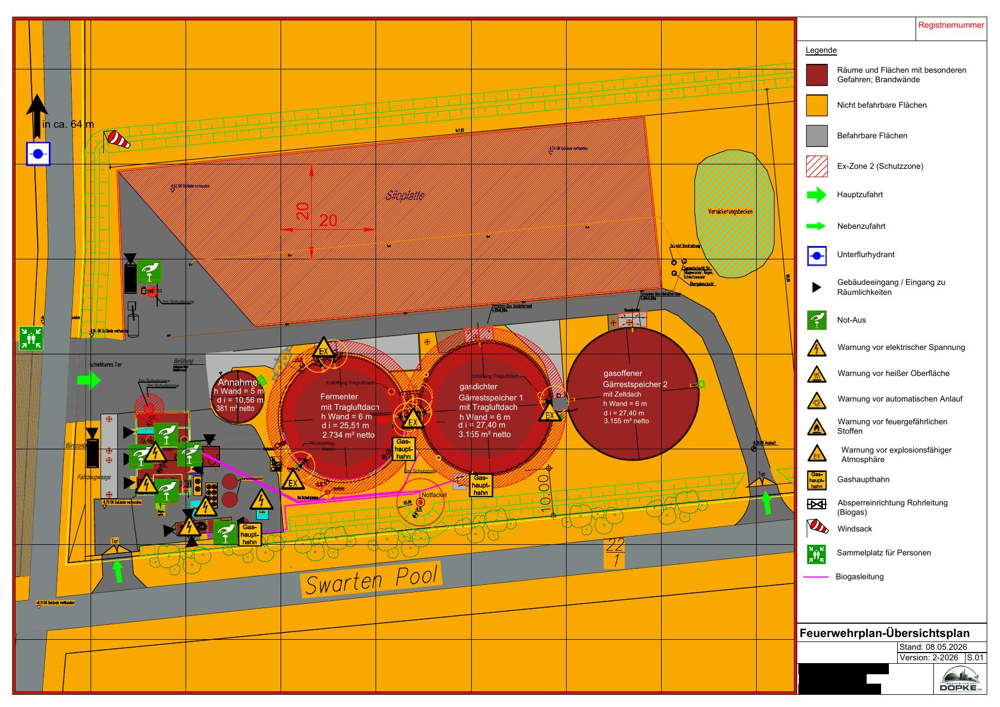
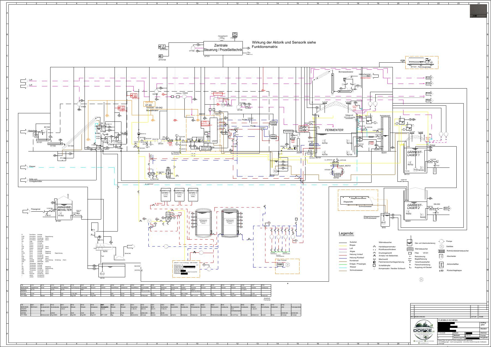
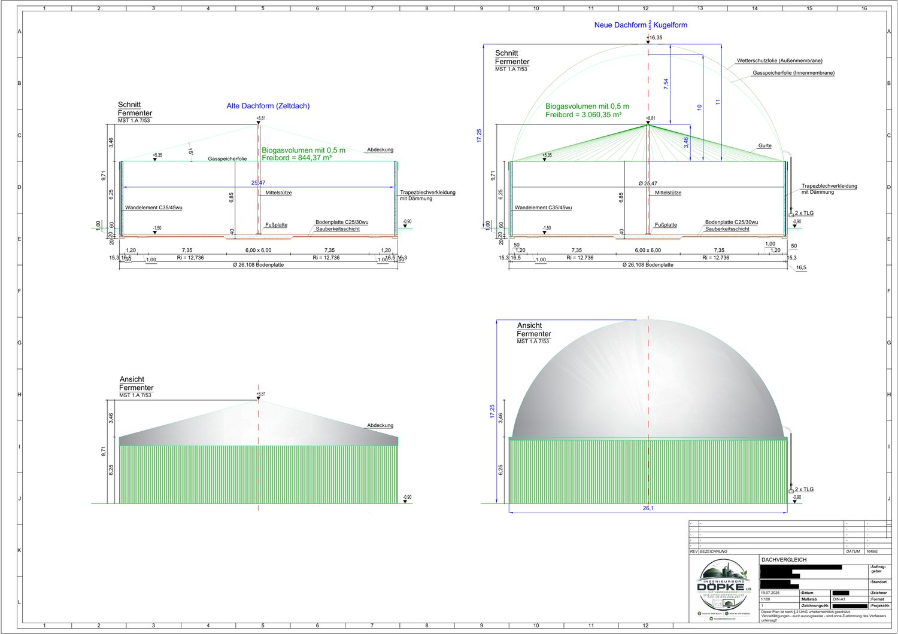
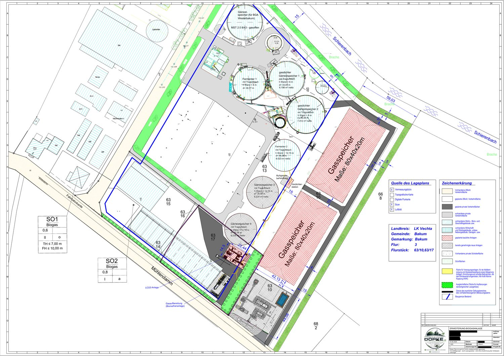
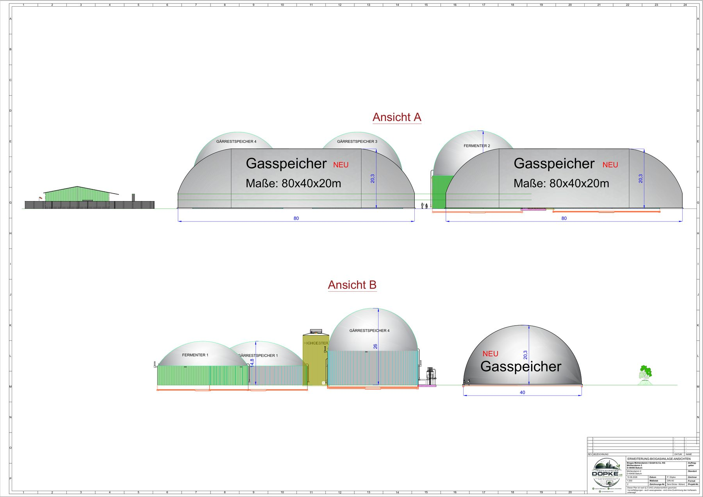
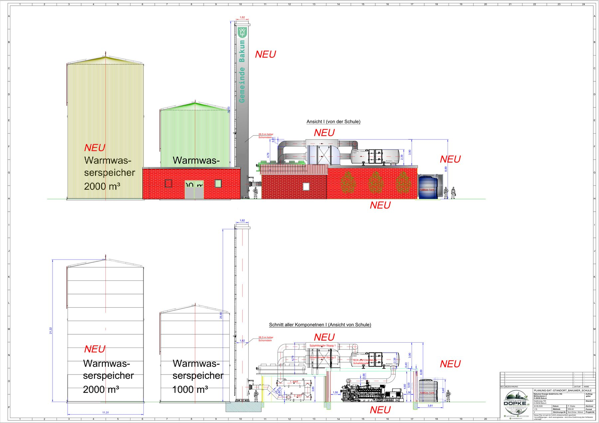

01 / BERATUNG
Technische Beratung & Konzept
Fundierte Entscheidungsgrundlagen, Machbarkeitsbetrachtungen und ein klarer Blick auf technische und wirtschaftliche Zusammenhänge.
↗Von der ersten Idee bis zur Inbetriebnahme: Wir unterstützen Projekte in Biogas, erneuerbaren Energien, Anlagenbau und technischer Planung – strukturiert, praxisnah und mit Blick auf das Ganze.
Wir verbinden technische Expertise mit Projektüberblick – damit aus komplexen Anforderungen tragfähige Lösungen werden.
Fundierte Entscheidungsgrundlagen, Machbarkeitsbetrachtungen und ein klarer Blick auf technische und wirtschaftliche Zusammenhänge.
↗Planungs- und Entwicklungsleistungen für Biogasanlagen und Energietechnik – von der Idee über die Abstimmung bis zur Umsetzung.
↗Koordination von Beteiligten, Ausschreibungen, Projektcontrolling und Unterstützung bei Inbetriebnahme und Dokumentation.
↗Strukturierte Zusammenstellung technischer Unterlagen und Unterstützung bei genehmigungsbezogenen Projektanforderungen.
↗Technische Bewertungen und Machbarkeitsstudien als belastbare Basis für die nächsten Projektschritte.
↗Wir behalten Schnittstellen, Termine und Ziele im Blick – und unterstützen dort, wo Ihr Projekt es konkret braucht.
↗Einblicke in Biogasanlagen, Fermenter und technische Komponenten – als visuelle Ergänzung zu unseren Planungsunterlagen.

Biogasanlagen im landschaftlichen Umfeld

Bauliche Komponenten der Biogastechnik

Ein technischer Blick auf die Anlage
Bildnachweise: Spielvogel – Biogas plant near Wremen, Hartmut Schmidt Heidelberg – Biogas tank und Vasyatka1 – GASAG Biogas plant in Schwedt; jeweils unter CC BY-SA 4.0. Die Aufnahmen dienen der allgemeinen Illustration und zeigen nicht zwingend Kundenanlagen des Ingenieurbüros.
Ausgewählte Beispiele technischer Planungsunterlagen rund um Biogasanlagen und Anlagenbau.

Beispiel einer Anlagenübersicht mit sicherheitsrelevanten Bereichen und technischen Einrichtungen.
Zeichnung als PDF ansehen ↗
Technisches Schema mit Anlagenkomponenten, Rohrleitungen sowie Mess- und Regeltechnik.
Zeichnung als PDF ansehen ↗
Vergleich einer bestehenden Dachform mit einer neuen Kugelform, einschließlich Schnitten und Ansichten des Fermenters.
Zeichnung als PDF ansehen ↗
Planungsübersicht mit Fermentern, Gärrestspeichern, Gasaufbereitung und Flächenaufteilung.
Zeichnung als PDF ansehen ↗
Ansichten A und B mit Anordnung der Speicher und ausgewählten Maßangaben zur Anlagenerweiterung.
Zeichnung als PDF ansehen ↗
Technische Ansichten mit Warmwasserspeichern, Schornstein sowie dargestellten Anlagen- und Abgas-Komponenten.
Zeichnung als PDF ansehen ↗Hinweis: Bitte vor der Veröffentlichung sicherstellen, dass alle dargestellten Zeichnungen für eine öffentliche Präsentation freigegeben sind und keine vertraulichen Kunden- oder Standortinformationen enthalten.
Jedes Projekt bringt eigene Rahmenbedingungen mit. Deshalb setzen wir auf klare Kommunikation, realistische Planung und Lösungen, die sich in der Praxis bewähren.
Durch KI-Unterstützung und maßgeschneiderte Bausteine lässt sich das volle Potenzial ausschöpfen, um erhebliche Ersparnisse für Kunden zu erzielen. Da KI-Systeme jedoch nicht fehlerfrei arbeiten, wird jedes Ergebnis von einer erfahrenen Fachkraft ausgiebig überprüft und bei Bedarf optimiert. Damit garantieren wir Ihnen maximale Effizienz bei gewohnter Zuverlässigkeit.
Wir klären Ihre Ziele, Rahmenbedingungen und offenen Fragen.
Wir strukturieren Aufgaben, Schnittstellen und sinnvolle nächste Schritte.
Sie erhalten eine abgestimmte Vorgehensweise und klare Leistungen.
Wir begleiten die vereinbarten Aufgaben verlässlich bis zum Ziel.
Ob erste Idee, konkrete Planung oder Unterstützung in einer laufenden Umsetzung: Lassen Sie uns über Ihr Vorhaben sprechen.
E-Mail schreiben ↗